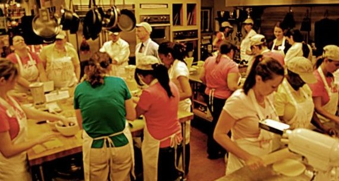

Welcome to the Kitchen
This is now my idea of what it's like at Dev Bootcamp.Shareef Bishay's fireside chat was a good video to watch to get a better idea of how Dev Bootcamp evolved. The questions were helpful and addressed very well by Shereef. The kitchen approach makes a lot of sense to me. Due to common culture training initially I noticed my indignation at the idea. "I paid for this so you should deliver to me." I recognize that's a very limiting mindset coming out of our current model of a monetary system. It may be pervasive, but doesn't mean it reflects how people work and learn together.
You get what you put in. Call it karma, call it logical, economical or divine, call it what you like. But this has been a truth in many, if not all experiences in life. Even if it doesn't always look like how I expect it to look.
Furthermore, it is by cooperation and interaction that we as humans can accomplish the greatest things. The approach of Dev Bootcamp is a sign of how everyone involved is there for the same goal; To learn and help eachother learn as much as possible. I have no doubt that goal will be accomplished when we share that mindset.
That being said, I am glad to know about the headset rule and there is time to focus by myself. It sounds like this balancing can take place in an organical way.
Pair programming seems like a great way to learn from eachother, although I didn't feel I needed Shareef's first reason for pair programming: Learning to relate to others. I found a bit of arrogance in myself here, because over the years with various practices and training I have become quite stable in the sense that I don't let knee-jerk reactions take place. I know that I do not have to believe the judgments that come up and I feel less and less urgency to act on each thought that may arise. This allows me to be much more open to the situation and other people.
But I can find my humility and just accept that there is always, always, more to learn.
The other reasons for pair programming resonated more directly. I love learning little tricks and new shortcuts. It's also nice to learn together, learn communicating these new skills efficiently and bounce ideas back and forth to reach an exciting solution.
To answer the questions asked in this assignment: Am I excited? Yes. Does this make me nervous? Yes. I am not sure where the excitement ends or the nervousness begins. It all depends on where you stand. Being excited or being terrified isn't that much different in itself. I am going to a new environment, meet new people, work harder than ever before and learn more than I thought I could learn in this amount of time. I know this is going to be exciting, scary, challenging, fun, stressful, joyful, etc. The whole spectrum will come by and that is absolutely fine for me. This is the heat in the kitchen and I am ready to get in there.